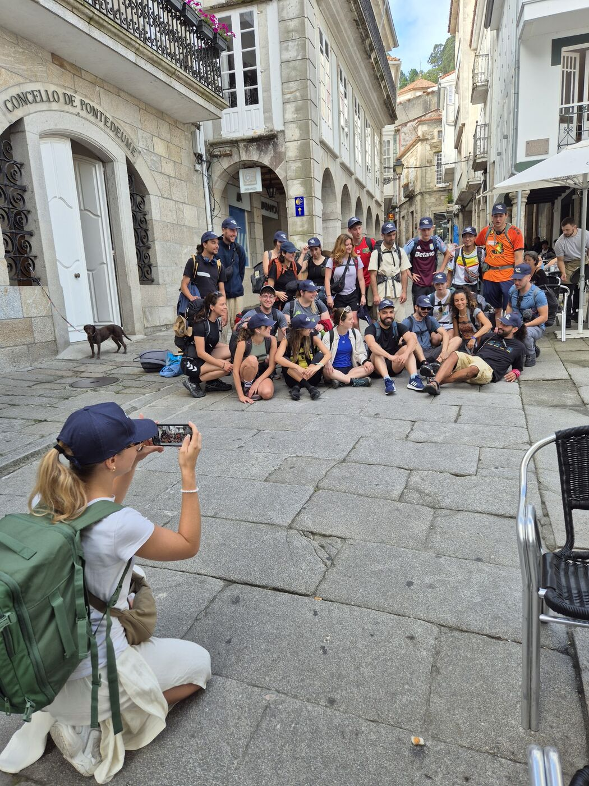
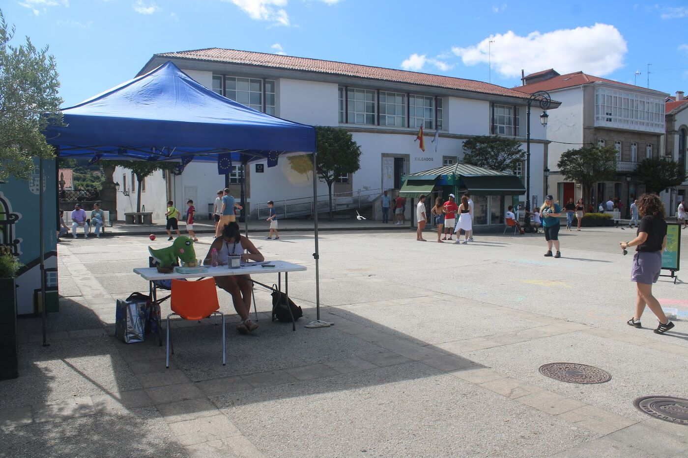
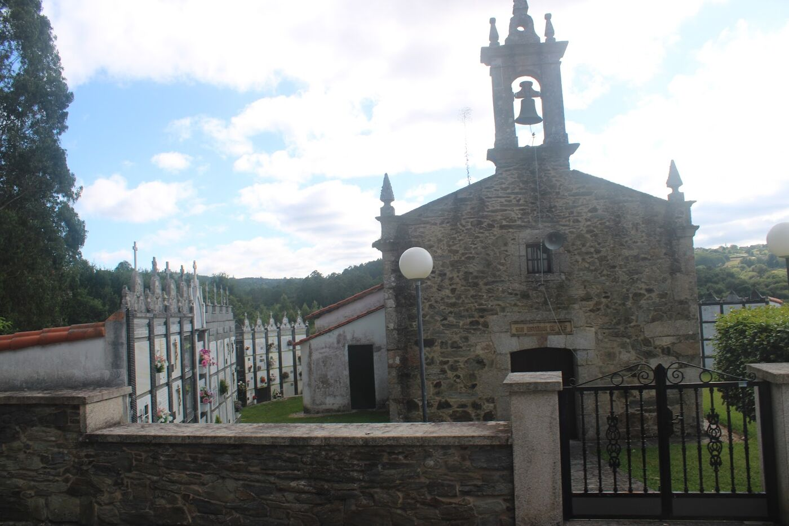
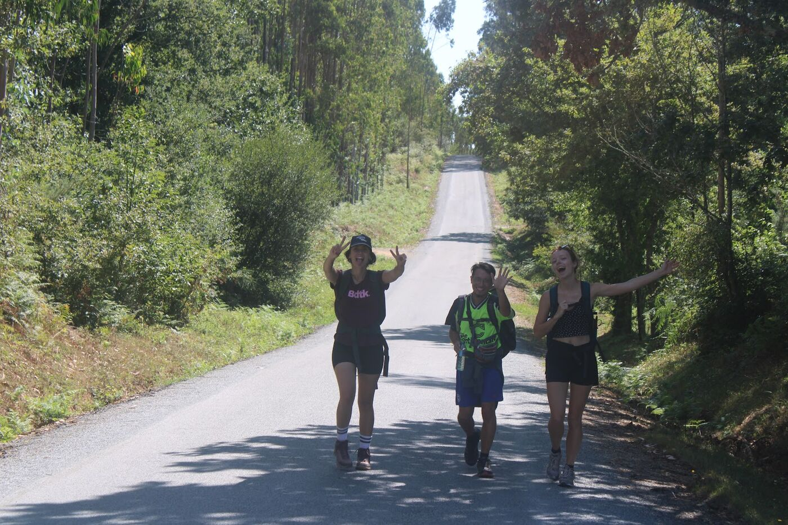
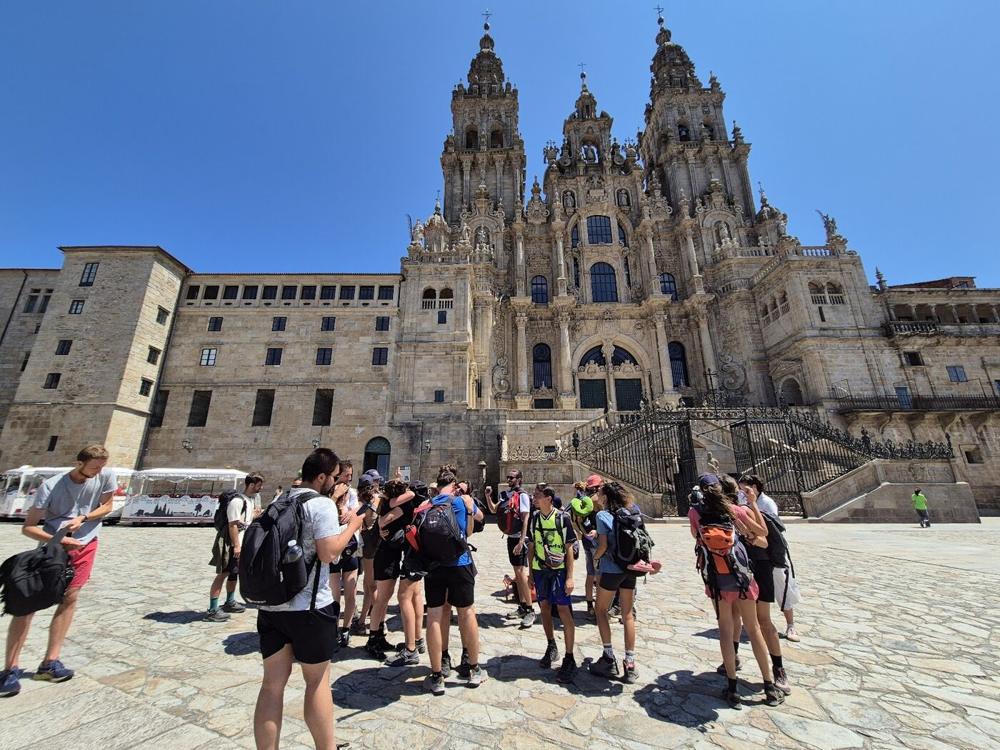

Buen Camino
A pilgrimage to the inner self.
An intense journey about mental health, Spain.

A pilgrimage to the inner self.
We walked the English Way of the Camino de Santiago, an ancient pathway to Santiago, to talk about mental health with the people of Spain. Participants shared their personal stories in four Human Libraries along the route.
Five stops on the English Way
From the Atlantic coast to Santiago de Compostela, one stage at a time.
Pontedeume
A lovely medieval town to get ready, mind and legs, before the first steps away from the Atlantic.

Betanzos
Said by many to serve the best tortilla in the world. Tasted with locals while celebrating the first public event in its stone streets.

Ordes
A modern town halfway along the route, and the place to rest, reflect and recharge for the final kilometres.

Sigüeiro
The last stop before Santiago, with parks, forest and a river, and friendly locals keen to listen to the stories.

Santiago de Compostela
The magical city hosted the last and most important part of the trip: time to digest everything collected along the Way.

Photos from the road
From the first kilometres to the Obradoiro square. Tap a photo to see it larger.
What this chapter delivered
What worked
- A shared catalogue of personal stories on mental health, built by participants before the walk and used to prepare each Human Library.
Everything on the road
Tickets, accommodation and meals were covered by the project. Some restrictions applied. This chapter is completed and applications are closed.
See how the Human Library works